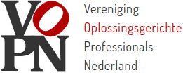
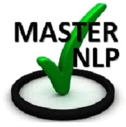
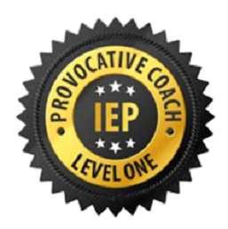

Onderweg in het leven ontdekt ieder mens mogelijkheden en kansen maar komt ook iedereen uitdagingen tegen en soms ernstige hobbels. Als coach en therapeut bied ik een luisterend oor en ga samen met je op zoek naar antwoorden en oplossingen die jou passen.
Regelmatig spreek ik mensen die het idee hebben dat zij alle moeilijkheden in het leven zelf moeten oplossen en zich schamen als zij er niet uitkomen. In mijn lange ervaring in de hulpverlening heb ik ontdekt dat mensen heel veel kracht hebben en vaak de oplossingen voor allerhande problemen zelf in huis hebben. Dit neemt niet weg dat het niet altijd gemakkelijk is om het in je eentje voor elkaar te krijgen om de uitdagingen die je tegenkomt te overwinnen.
Coaching kan je helpen om juist bij die krachten te komen die je nodig hebt en die je een stap verder brengen.
Samen kunnen we op zoek gaan naar wat helpend is.
Thema’s die voor coaching in aanmerking komen zijn heel divers. Hieronder een rijtje thema’s waarvoor mensen zoal coaching vragen.
In mijn coaching ga ik sterk uit van wat er al wel goed gaat en focus ik op Wat je wil bereiken of waar je naar toe wilt. Dit komt voort uit de oplossingsgerichte manier van werken (solution focussed) ontwikkeld door Insoo Kim Berg en Steve de Shazer.
Daarnaast gebruik ik veel technieken uit de NLP (Neuro Linguïstisch Programmeren). Ook dit is gebaseerd op het idee dat je zelf in staat bent om mogelijkheden te benutten of te ontwikkelen. Geweldloos verzet / Nieuwe autoriteit: Uit de methode geweldloos verze of nieuwe autoriteit hebben we geleerd van de uit Israel afkomstige psycholoog Haim Omer, dat in relaties het meestal niet zinvol is om confrontaties te laten escaleren. Volhouden en zelf regie houden zijn belangrijke sleutelwoorden.
Een geweldig leuke en effectieve manier van coachen is de provocatie. Met warmte, Humor en veel uitdaging de problemen te lijf gaan werkt vaak louterend en houdt het ook nog leuk voor de coach.
Coaching betekent niet alleen praten maar ook ervaren. Dit kunnen lichaamsgerichte oefeningen zijn, maar ook werken met visualisaties als tekeningen en mindmaps. Soms gebruik ik ook de Duplo methode om met poppetjes neer te zetten hoe je jouw (gezins)situatie ervaart
Moeilijkheden en hobbels die je tegenkomt in het leven hebben vaak grote invloed. Niet alleen op je psychisch welzijn maar ook op je lichamelijk welzijn. In mijn coaching kijken we dan ook naar de integrale gezondheid en als dit nodig is maken we een integraal plan. Mijn praktijk zit in het centrum voor vitaliteit waarin ook samengewerkt kan worden met fysiotherapeuten, logopedisten enz.